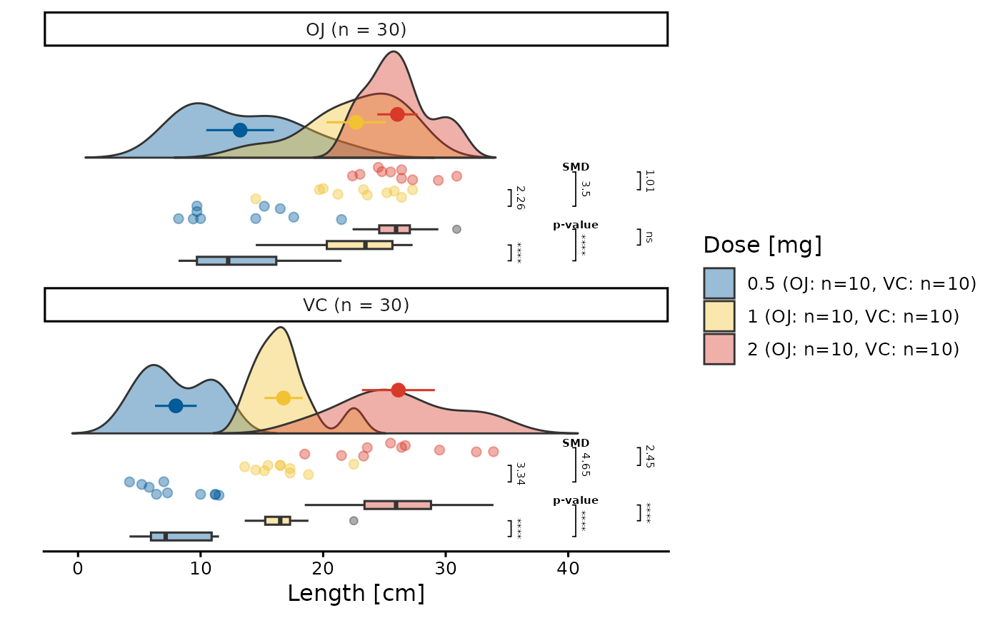
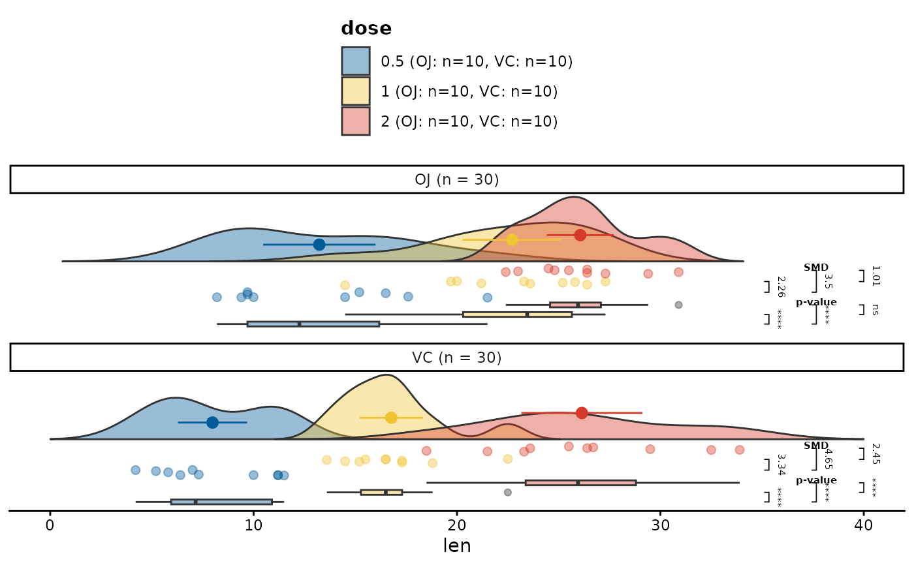

The raincloud() function allows to generate distribution plots
for continuous data in an easy and uncomplicated way. The function is based
on the ggplot2 package, which must already be preinstalled Raincloud
plots consist of three main elements:
Distribution plots, specifically violin plots with the mean values and standard deviations of respective groups,
Jittered point plots depicting the underlying distribution of the data in the rawest form,
Boxplots, summarizing the most important statistics of the underlying distribution.
Usage
raincloud(
data = NULL,
y = NULL,
group = NULL,
facet = NULL,
ncol = 1,
significance = NULL,
sig_label_size = 2L,
sig_label_color = FALSE,
smd_type = "mean",
density_scale = "area",
limits = NULL,
jitter = 0.1,
alpha = 0.4,
plot_name = NULL,
overwrite = FALSE,
...
)Arguments
- data
A non-empty
data.framecontaining at least one numeric column, as specified by theyargument. This argument must be provided and does not have a default value.- y
A single string or unquoted symbol representing the name of a numeric column in the
data. In the vector matching workflow, it is typically a numeric covariate that requires balancing.- group
A single string or unquoted symbol representing the name of a factor or character column in
data. Inraincloud()plots, the groups specified bygroupargument will be distinguished by separatefillandcoloraesthetics. For clarity, it is recommended to plot fewer than 10 groups, though there is no formal limit.- facet
A single string or unquoted symbol representing the name of a variable in
datato facet by. This argument is used in a call toggplot2::facet_wrap(), creating separate distribution plots for each unique group in thefacetvariable.- ncol
A single integer giving the number of columns in the facet layout. When
facetis notNULL,ncolmust be between 1 and the number of unique categories in thefacetvariable; values outside this range result in an error. This argument is ignored whenfacetisNULL.- significance
A single string specifying the method for calculating p-values in multiple comparisons between groups defined by the
groupargument. Significant comparisons are represented by bars connecting the compared groups on the left side of the boxplots. Note that if there are many significant tests, the plot size may adjust accordingly. For available methods refer to the Details section. If thesignificanceargument is notNULL, standardized mean differences (SMDs) are also calculated and displayed on the right side of the jittered point plots.- sig_label_size
A single integer between 1 and 20 specifying the size of the significance and standardized mean difference (SMD) labels shown on the left and right side of the plot.
- sig_label_color
Logical flag. If
FALSE(default), significance and SMD bars and text are displayed in the default color (black). IfTRUE, colors are applied dynamically based on value: nonsignificant tests and SMD values below 0.10 are displayed in green, while significant tests and SMD values of 0.10 or higher are displayed in red.- smd_type
A single string indicating the type of effect size to calculate and display on the left side of the jittered point plots:
mean- Cohen's d is calculated,median- the Wilcoxon effect size (r) is calculated based on the Z statistic extracted from the Wilcoxon test.
- density_scale
Character(1). Scaling method for the violin density.
"area": all violins have the same total area (default)."count": violin areas are proportional to the number of observations."width": all violins have the same maximum height (width when they are placed horizontally), regardless of sample size.
- limits
A numeric atomic vector of length two, specifying the
yaxis limits in the distribution plots. The first element sets the minimum value, and the second sets the maximum. This vector is passed to theggplot2::xlim()function to adjust the axis scale.- jitter
A single numeric value between 0 and 1 that controls the amount of jitter applied to points in the
ggplot2::geom_jitter()plots. Higher values of thejitterargument produce more jittered plot. It's recommended to keep this value low, as higher jitter can make the plot difficult to interpret.- alpha
A single numeric value between 0 and 1 that controls the transparency of the density plots, boxplots, and jittered point plots. Lower values result in higher transparency. It is recommended to keep this value relatively high to maintain the interpretability of the plots when using the
groupargument, as excessive transparency may cause overlap between groups, making it difficult to distinguish them visually.- plot_name
A string specifying a valid file name or path for the plot. If set to
NULL, the plot is displayed to the current graphical device but not saved locally. If a valid name with.pngor.pdfextension is provided, the plot is saved locally. Users can also include a subdirectory inplot_name. Ensure the file path follows the correct syntax for your operating system.- overwrite
A logical flag (default
FALSE) that is evaluated only if thesave.nameargument is provided. IfTRUE, the function checks whether a plot with the same name already exists. If it does, the existing plot will be overwritten. IfFALSEand a plot with the same name exists, an error is thrown. If no such plot exists, the plot is saved normally.- ...
Additional arguments passed to the function for calculating p-values when the
significanceargument is specified. For available functions associated with differentsignificancemethods, please refer to the Details section and consult the documentation for the relevant functions in therstatixpackage.
Value
A ggplot object representing the distribution of the y variable
across the levels of the group and facet variables in data.
Details
Available methods for the argument significance are:
"t_test"- Performs a pairwise comparison using the two-sample t-test, with the default Holm adjustment for multiple comparisons. This test assumes normally distributed data and equal variances. The adjustment can be modified via thep.adjust.methodargument. The test is implemented viarstatix::pairwise_t_test()"dunn_test"- Executes Dunn's test for pairwise comparisons following a Kruskal-Wallis test. It is a non-parametric alternative to the t-test when assumptions of normality or homogeneity of variances are violated. Implemented viarstatix::dunn_test()."tukeyHSD_test"- Uses Tukey's Honest Significant Difference (HSD) test for pairwise comparisons between group means. Suitable for comparing all pairs when the overall ANOVA is significant. The method assumes equal variance between groups and is implemented viarstatix::tukey_hsd()."games_howell_test"- A post-hoc test used after ANOVA, which does not assume equal variances or equal sample sizes. It’s particularly robust for data that violate homogeneity of variance assumptions. Implemented viarstatix::games_howell_test()."wilcoxon_test"- Performs the Wilcoxon rank-sum test (also known as the Mann-Whitney U test) for non-parametric pairwise comparisons. Useful when data are not normally distributed. Implemented viarstatix::pairwise_wilcox_test().
See also
mosaic() which summarizes the distribution of discrete data
Examples
## Example: Creating a raincloud plot for the ToothGrowth dataset.
## This plot visualizes the distribution of the `len` variable by
## `dose` (using different colors) and facets by `supp`. Group
## differences by `dose` are calculated using a `t_test`, and standardized
## mean differences (SMDs) are displayed through jittered points.
library(ggplot2)
library(ggpubr)
p <- raincloud(ToothGrowth, len, dose, supp,
significance = "t_test",
jitter = 0.15,
alpha = 0.4
)
## As `p` is a valid `ggplot` object, we can manipulate its
## characteristics using the `ggplot2` or `ggpubr` packages
## to create a publication-grade plot:
p <- p +
theme_classic2() +
theme(
axis.line.y = element_blank(),
axis.ticks.y = element_blank()
) +
guides(fill = guide_legend("Dose [mg]")) +
ylab("Length [cm]")
p

## Example: demonstrate `limits` and `plot_name` (no file is saved
## because `plot_name = NULL`)
p2 <- raincloud(
ToothGrowth, len, dose, supp,
significance = "t_test",
limits = c(0, 40),
plot_name = NULL
)
p2
#> Warning: Removed 29 rows containing missing values or values outside the scale range
#> (`geom_flat_violin()`).
